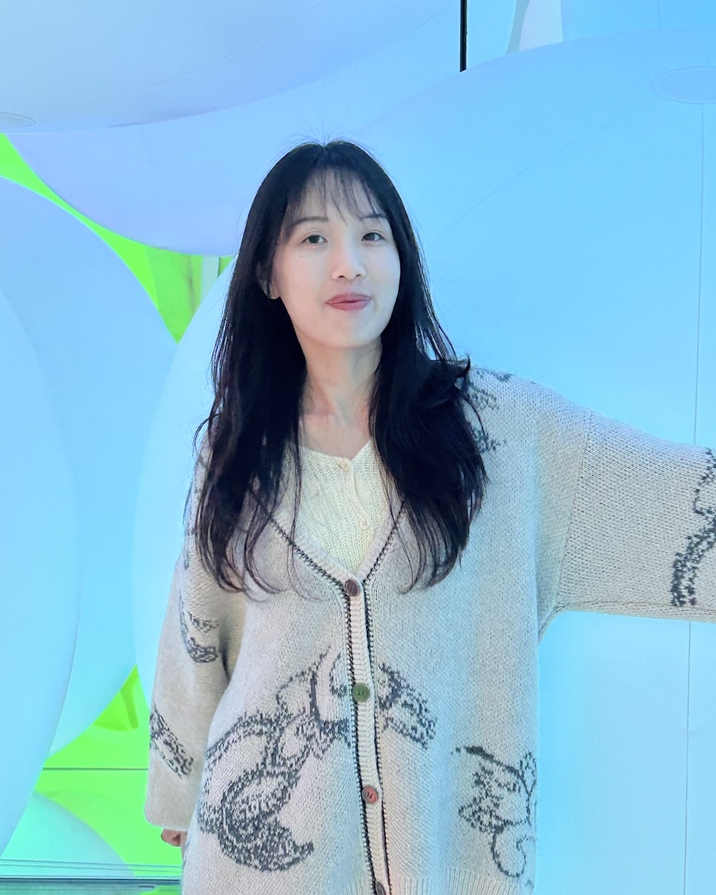

Min-En (Elsa) Chou
Experimental AMO physicist, working toward AI for quantum systems

About
I approach quantum systems from the hardware up. At National Tsing Hua University, I spent 3+ years co-building an ultracold lithium–cesium apparatus from bare optical table to working experiment. I then spent 2.5 years in optical R&D at LARGAN Precision, designing imaging lenses and image-processing tools.
I now work on AI-driven research and design for ultracold-atom experiments. Alignment, tuning, troubleshooting, and optical design still consume much of a lab's time, and they are well suited to automation. I want to test these methods on real hardware, and build research infrastructure where people and AI collaborate. I'm currently looking for PhD positions and research engineering roles in this direction.
I'm also interested in how this shift changes the way researchers think and learn, and in making quantum information something people can see and touch. Outside my research, I run clinqclinq studio, a small space for playful interactive and visual pieces.
Research interests
 Autonomous ultracold-atom systems
Autonomous ultracold-atom systems AI-driven research and optical design
AI-driven research and optical design Neutral-atom platforms
Neutral-atom platforms Seeing quantum phenomena
Seeing quantum phenomena Quantum resource estimation
Quantum resource estimation Quantum error correction
Quantum error correction
Publications
-
Gestural control of quantum information in virtual realityIn SIGGRAPH Posters ’26. Article 48, pp. 1–3, 2026 DOI
-
Cold lithium–cesium slow atomic beam from a two-dimensional magneto-optical trapPhysical Review A 103, 023102, 2021 DOI
-
Towards a dual-species Bose–Einstein condensate of ⁷Li and ¹³³CsAPS DAMOP Meeting, 2020 Abstract
-
A new lithium–cesium machine for the study of quasiparticle localization in Bose–Einstein condensatesAPS DAMOP Meeting, 2018 Abstract
Patents
-
Imaging optical lens system, imaging apparatus and electronic deviceUS 2026/0072251 A1. Pending. Patent
Experience
-
Research Assistant2025 – 2026Future Narratives Lab, National Yang Ming Chiao Tung University · Hsinchu, TaiwanQuantum HCI, visualization, and art administrative coordination.
-
Optical R&D Engineer2023 – 2025LARGAN Precision Co., Ltd. · Taichung, TaiwanImaging lens design, tolerancing, and image-processing algorithms.
-
Patent Engineer2021 – 2022TSAI, LEE & CHEN / JC Patent Attorneys Office · Taipei, TaiwanPatent drafting and patentability analysis across optics, semiconductors, and robotics.
-
Graduate Researcher2017 – 2020Quantum Gas Laboratory, National Tsing Hua University · Hsinchu, TaiwanUltracold Li-Cs apparatus design and construction. Advisor: Shih-Kuang Tung.
-
Undergraduate Researcher2016 – 2017National Tsing Hua University · Hsinchu, TaiwanMagnetic monopole simulations in topological insulators. Advisor: Chung-Yu Mou.
Teaching
-
Teaching Assistant2017General Physics Laboratory, National Tsing Hua University · Hsinchu, TaiwanGuided undergraduates through experiments and graded lab reports.
-
Lecturer2015High School Science Camp, National Chiayi Senior High School · Chiayi, TaiwanTaught a lecture introducing thermal and statistical physics to high school students.
Education
-
M.S. Physics2018 – 2020National Tsing Hua University · Hsinchu, TaiwanThesis: "Building a compact apparatus for the creation of ultracold Li and Cs atoms."
-
B.S. Physics2014 – 2018National Tsing Hua University · Hsinchu, TaiwanGraduated in the top 10% of the class. Academic Excellence Award, 2014 and 2015.
Contact
Email: elsaxchou[a]gmail.com for more information.